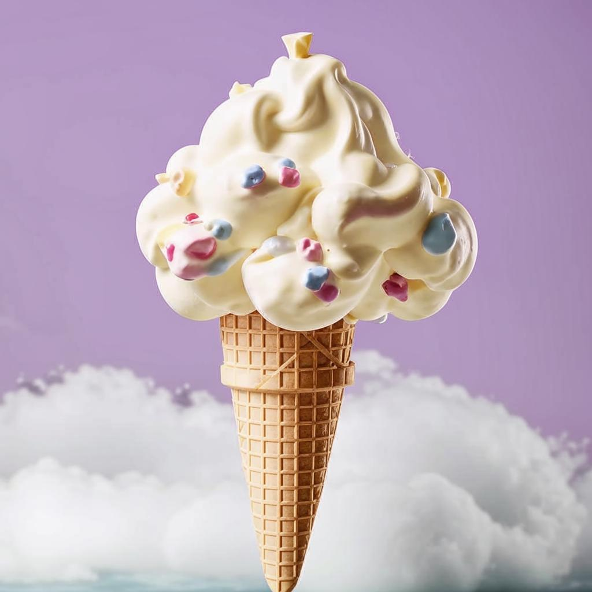

Мороженое "Нежное облако" - это невероятно нежное и легкое десертное удовольствие, которое просто тает во рту, окутывая вас нежными вкусами и нежным ароматом. Это идеальный способ охладиться в жаркий летний день или просто порадовать себя в любое время года. Это моженое с фруктами, ягодами или долькой свежего фрукта, чтобы придать ему особую изысканность и освежающий вкус. Нежное облако привнесет нотки нежности и легкости в вашу жизнь, сделая каждый момент незабываемым и волшебным. Погрузитесь в мир нежности с "Нежным облаком" и наслаждайтесь каждой ложкой этого удивительного десерта. 
роженое обладает неповторимой текстурой облака, плотностью, которая
напоминает пушистые облака на небесах. Его невероятная нежность делает
его идеальным выбором для любителей мягких и воздушных десертов.
Ингредиенты для "Нежного облака" подобраны с особым вниманием к каждой
детали.
Сочное молоко, свежие яичные желтки, натуральная ваниль и
сливки объединяются в этом рецепте, чтобы создать идеальное сочетание
вкусов и ароматов. При первом кусочке вы почувствуете, как мороженое
нежно тает на языке, оставляя послевкусие невероятной мягкости. Каждая
ложка "Нежного облака" принесет вам настоящее наслаждение и
исключительное удовольствие. Подайте это моро
В кастрюле смешайте молоко, воду, стручок ванили (разрезанный и семена вынутые) и половину сахара. Доведите до кипения на среднем огне, затем убавьте огонь и варите еще 5-7 минут, чтобы ваниль отдала свой аромат.
В отдельной миске взбейте желтки с оставшимся сахаром до образования пышной массы.
Постепенно добавляйте горячую ванильную смесь в яичную смесь, постоянно помешивая, чтобы яйца не свернулись. Потом верните всё это обратно в кастрюлю и на слабом огне варите, постоянно помешивая, пока смесь не загустеет.
Процедите смесь через сито, чтобы удалить стручок ванили и получить более гладкую текстуру. Дайте смеси остыть до комнатной температуры.
Взбейте сливки до образования пика и осторожно добавьте их к остывшей смеси, аккуратно перемешивая.
Залейте получившуюся смесь в мороженицу и морожте согласно инструкциям вашего устройства.